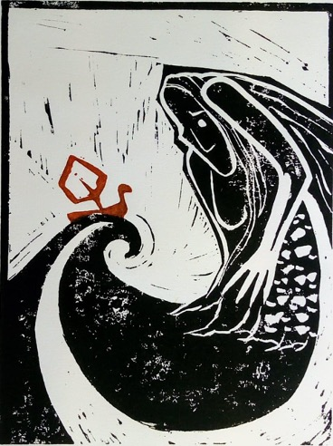

Becca is a poet/writer/researcher/teacher living in York. She is currently based in the Department for English and Related Literature at the University of York.
Her research (poetic and academic) explores the relationship between people and the environments we live in: both natural and unnatural, unmade and built, with a particular focus on the watery.
Raised in the North West, where it rains a lot, Becca spent her formative years surrounded by mud. This sticky, protean muck finds its way into her work one way or another. She is interested in the possibilities of translation/decomposition & recomposition/connections & interchange/weavings & undoings.
